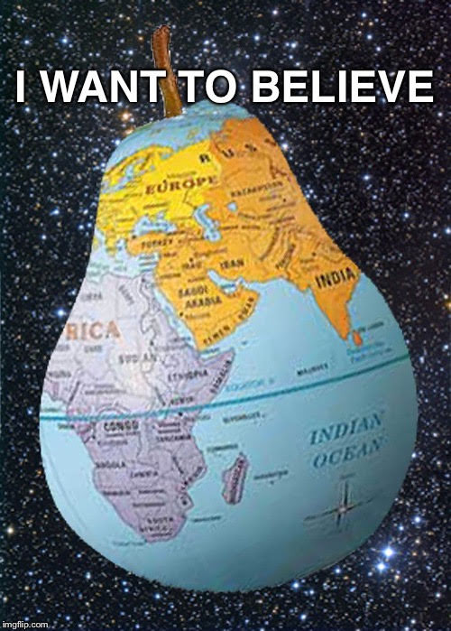

flerf
noun
1. A flat earther. A person who has come to the conclusion that the earth is a level stationary plane via common sense, logic, and correctly applying the scientific method.

noun
1. A flat earther. A person who has come to the conclusion that the earth is a level stationary plane via common sense, logic, and correctly applying the scientific method.
